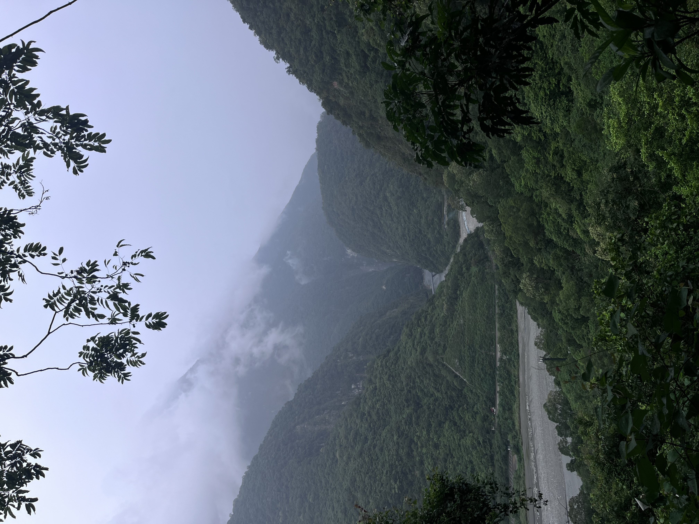

My name is Salman Al Farisi, and my Chinese name is 陳成文, which should be read as Chan4 Sing4-Man4 in Cantonese. It’s usually pronounced as Chén Chéngwén in Mandarin Chinese instead, which is what’s commonly used by people in Taiwan, where I currently live and study.
I was born in Jakarta but grew up in Lampung, a province known for its beaches and coffee. I still remember one night my father took me fishing there, and looking up I could see the stars so clearly. Taiwan, especially Hsinchu, which eventhought I have many mixed feelings about the city, has also become a kind of home to me, since it’s the first place I’ve felt truly be the version of myself and here I truly build what I want to be. Hong Kong holds a different kind of familiarity: I grew up hearing my grandfather’s stories about his time there, so vivid that when I finally visited for the first time for conference, it somehow already felt like home – eventhought I am speaking broken Cantonese and everyone often said “啊？“ after listened to me. Bandung was where I studied for my undergraduate which I often visit the Bosscha Observatory and spent lot of time there and really love the nice mountains and weathers.

I love astronomy mainly because it’s such an open-ended field — there’s always another question behind the one you just answered. I also just enjoy observing, whether that’s through a telescope or simply looking up at the night sky. Outside of research, I love mountaineering and being out in nature. There’s something about the quiet and scale of the mountains that puts things in perspective, similar to staring up at the night sky. I also play football, usually as a forward.
I also like to read. One of my favorite books is Genzaburō Yoshino’s How Do You Live? (君たちはどう生きるか). I liked it so much that I spent time reading the original Japanese edition as a way to learn the language, in addition to the English version. This book has stayed with me over the years, its questions about how to observe the world honestly and find your own place in it feel just as relevant to me now as they did when I first read it, and they still shape how I approach life and scientific journey.
I believe that, at the end of the day, scientific research is a deeply human endeavor, built on many small moments of learning, encouragement, and connection rather than grand discoveries alone. I try to hold onto that: doing small things well and appreciating the small moments as they come.